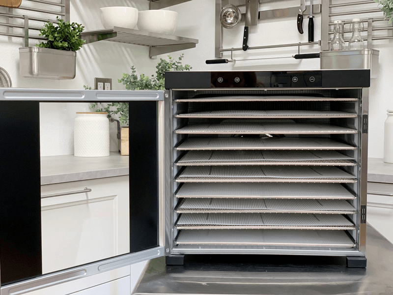
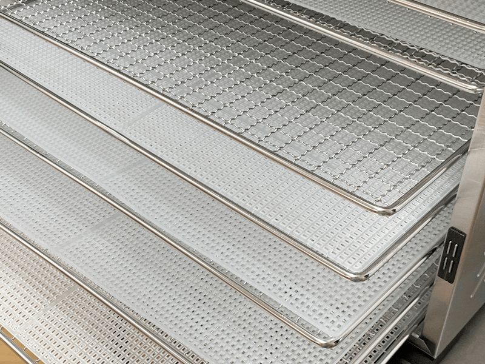
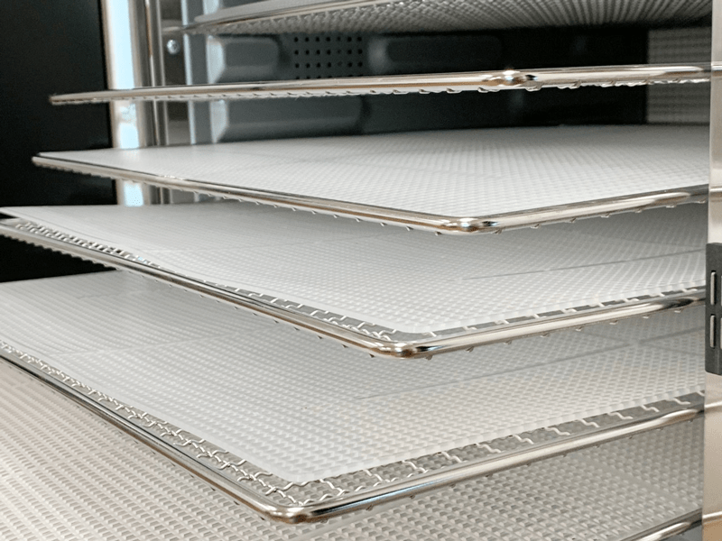

Samson Silent Dehydrator Review
Today, I would like to share a product review for the Samson Silent Dehydrator. First off, I was not approached by Samson to review their product. Bob and I have been remodeling our studio kitchen, and one of the key features that I desired for this space was QUIETNESS. This kitchen was first designed over five years ago as a commercial kitchen where we would be manufacturing and selling raw foods.
The time has come to relocate the manufacturing business due to growth and demand. Therefore, I am transforming my commercial kitchen into a studio kitchen where I can continue my recipe development, and perhaps I’ll get into making videos, and also to use this space for live culinary classes. All of this requires peace and quiet so that inspiration can abound! I will be writing a post on this whole process soon, but for now, you can follow my journey in our private NouveauRaw Facebook group (
here).
Since I am relocating the big commercial appliances (fridges, freezers, and dehydrator) the noise level has decreased a hundred-fold. This project has brought awareness of how much I relish peace and quiet. With Big Red moving out (commercial dehydrator) I would be utilizing my home Excalibur dehydrators more. With my ears sensitive to sound, it got me to wondering if there was a quieter unit on the market. That is when I came across the Samson Silent Dehydrator.

Side hinged door.
I showed it to Bob, and we decided to dig a little deeper to learn more about the unit, which ultimately led to ordering one so we could give it a test run. Below I will share the pros and cons. Keep in mind that the cons are really just personal opinions and that they aren’t necessarily negatives. You know that saying, “One man’s trash is another man’s treasure”? Well, one thing about a machine that doesn’t appeal to me may not be an issue for you. You get my drift. I will be making my comparison to the Excalibur 9 tray unit since that has been my go-to machine for the past decade.

Stainless steel trays (no sharp edges) and rigid mesh trays.
Regardless of what my review reveals, you should always take your own needs into account. Ask yourself…
- What size do I need, in terms of drying volume? Do you have a large family, or is it just you?
- Is noise a factor? Where will the dehydrator be located? Kitchen, pantry, garage, etc.
- What size unit will fit in the space that I have mapped out for it?
- What is my budget? (that’s a big one)
- Is a used dehydrator an option? Look on Craigslist or Facebook Virtual Garage Sales in your local area.
So Amie Sue… What do you think of the Samson Silent Dehydrator?
When I was first writing this post, I broke it down to Pros and Cons. By the time I was done, I had decided to change my format. To be honest, at this point, I don’t have any cons regarding this unit. The things I have listed are more differences in what I am used to then cons. Bottom line is…
I am THRILLED with this machine!
With that being said, let me share why and how they compare to my Excalibur machines and to the Stainless Steel 10 tray Excalibur. I can’t test it against ALL the different dehydrators out on the market because there are far too many, and I don’t have the time or resources to do that. Of course, if you have any questions that you want to ask me about how to select a machine that is right for you, just leave a comment below.

Great spacing between trays for thicker foods.
What I LOVE about the Samson Silent and WHY
It’s important to share the whys because this will better help you understand why these things are important to me. I hope this will help you when you are trying to make your decision on what machine is right for you.
Noise Level
It is VERY quiet compared to other dehydrators. AH! YES! The gentle hum of this machine is like soft playing music to my ears! It truly is a noticeable difference when compared to the Excalibur and Sedona (I tested that machine about six years ago and returned it). Keep in mind that the size and acoustics of the room will significantly affect how noisy or quiet a machine may appear.
- Samson – Quiet gentle hum. Unable to hear from the room next door.
- Excalibur – Loud enough hum to be heard through the walls.
Price
Naturally, the price range for dehydrators is all over the board. But I am not entertaining low-end models because I don’t find them to have the necessary quality and performance for my needs. But in the middle range, this unit measures up and is comparable in price. If you are in the market for a stainless steel unit, then the Samson is priced exceptionally well! Prices change so use the following prices as guidelines.
- Samson Silent stainless $279.99
- Excalibur plastic box without timer $199.99
- Excalibur plastic box WITH timer $295.99
- Excalibur 10 tray stainless steel $999.99 (shew!)
- Excalibur 9 tray stainless runs $499.99
Glass Door Front
The Samson unit has a glass door hinged on the left side and swings open. A hinged door isn’t necessarily a game-changer for me, but it is nice to swing the door open and not worry about where I am going to place the cover while I slide the trays in and out. I am neutral about having a glass door. It’s not like we have to watch for browning or burning as you have to when baking in an oven. But it’s been kind of fun. :)
Trays and Liners
It comes with 10 (15″x15″) stainless trays which allow you to dry up to 15.6 square feet of items at one time. I am used to a 9 tray unit, but hey, I will take an extra tray any day! I also love the sturdy stainless trays compared to the plastic ones.
-
The trays come with 10 BPA-Free Mesh Liners, as most dehydrators do. The mesh squares are much tighter than my Excalibur, which means fewer crumbs will fall through.
- As far as the nonstick sheets go, you will need to purchase these separately. The standard size for nonstick sheets are 14×14″, so to utilize the full potential of having 15 square inches, you will need to order larger ones and cut them to fit.
-
It has a BPA-Free Drip Tray that lays on the bottom of the unit, and this is an excellent feature because things can and do drip from time to time.
- The trays can be moved or removed for dehydrating taller items. I am used to this feature and is one that I find vital when owning a dehydrator and using it for raw culinary delights.
Push Button Control Panel
The location of the control panel is all about preference and where you are placing the unit. If you are going to keep the dehydrator in your kitchen on the countertop, chances are part of the unit will be pushed underneath the upper kitchen cabinets. The Excalibur requires you to pull it out so you can manage the controls visually.
- Samson – the controls are on the front panel
- Excalibur – the controls are at the back of the unit.
The Operating Fan
This item is high on my list of importance. Dehydrators come with fans that either located on the top, the back, or underneath the unit. To get the most out of your dry time, you will want to look for a machine that has a fan located at the back of the unit, which will allow the air to flow evenly over ALL the trays.
- Samson – the fan is at the back of the unit.
- Excalibur – the fan is at the back of the unit.
Fan Wattage
The heater wattage will help determine how efficient the machine will work. The higher the wattage, the easier it is to maintain even temperatures and the faster dry times. Faster drying will also help reduce bacteria when drying thick foods. For example, if you are making raw breads, the longer it takes to dry (cook) the bread, the better chance it has in becoming a breeding ground for bacteria which will cause a sourness.
- The Samson has higher fan wattage:
- Samson = 1000-watt fan.
- Excalibur = 600-watt fan.
Temperature Settings
I found that the temperature range was similar between the two machines. All though I am used to running my machine at 145 (for 1 hour) then reducing it to 115 degrees. With the Samson, I will have to “come close” to those ranges. this is NOT a big deal to me.
-
- Samson preset temperatures are = 95 / 104 / 113 / 122 / 131 /140 /149 / 158 / 167 degrees (F).
- Excalibur does not use preset temperatures., though there markings on the dial = 95 / 105 / 115 / 125 / 135/ 145/ 155 degrees (F).
Timer Range
I have seven Excalibur dehydrators, and I have gotten used to being able to leave them on for over twenty-four hours if need be. I do have a few with timers on them, but I found myself using the other non-timer machines more so. I prefer to check on the foods that I am drying throughout the process because there is NO such thing as exact timing when it comes to uncooking. Even the same recipe can differ each time based on the ripeness of the fruits or veggies used. Less ripe equates to less moisture, whereas riper generally means more moisture in it which, of course, affects the dry time.
- Samson has a range of 0:30 minutes to 19:30 hours.
- Excalibur with a timer has a range of 1 hour to 26 hours.
The Footprint
The footprint for the Samson is a tad large which can make or break a deal for some people. For me, it was perfect because, with the new design of my kitchen, it fits ideally into the cabinet that I selected.
- Samson footprint: 17″ L x 21″ W x 16.5″ H and weighs 40.8 pounds with the trays inside.
- Excalibur footprint: 19″ L x 17″ W x 12 1/2″ H. The Excalibur stainless unit weighs 63 pounds. The standard machine weighs 22 lbs.
- *Taking the trays out when transporting it will reduce the weight.*
Warranty
There is a pretty good difference between the two brands when it comes to warranty. This also isn’t a game-changer for me. I have been running the Excalibur machines for almost 10 years and have never had an issue. Granted I haven’t had the Samson very long so I can’t be a witness to how long or how well the unit will run. I use my machines more than the average person.
- Samson has a Certified Manufacturer’s 5 Year Warranty Motor, Fan, Heater, Control Panel. Click (Samson Dehydrator Warranty) to view the warranty. Samson Site for the dehydrator is (here).
- Excalibur has many different warranties but most commonly stated on its site is a 10-year limited warranty. But it’s not that cut and dry. To learn more about the nitty-gritty details click (here).
Looking to buy one? Click here… Samson Silent Dehydrator
If there is something that you want me to mention that perhaps I overlooked, please leave a comment below. And if you don’t own a dehydrator and wish to dabble in gourmet raw foods, I highly suggest you get one! It will open a whole new world for you! blessings, amie sue
© AmieSue.com